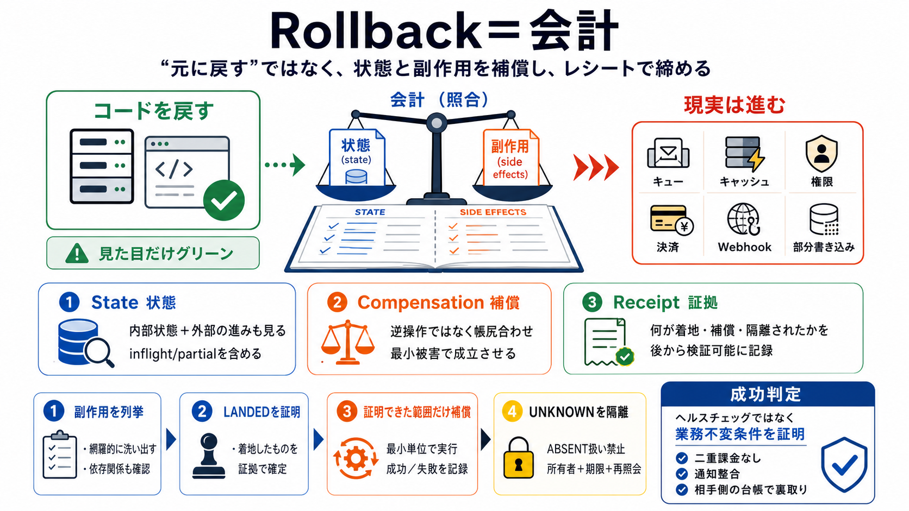

見えている
バイナリ／コードの戻し（見た目はグリーン）
戻した“つもり”だけが強調される

「元に戻す」ではなく、状態（state）と副作用（side effects）を補償で帳尻合わせし、証拠（レシート）で締める。 (元の発想に“巻き戻し”は要らない)
コードをロールバックしても、キュー・キャッシュ・権限・決済・Webhooks・部分書き込みなどは先に進んでいることがある。 だから「実体（現実）も戻る」とは限らない。
バイナリ／コードの戻し（見た目はグリーン）
外部副作用（通知、課金、権限ローテ等）
「過去の“最後に動いていた状態”にノスタルジーで戻る」のではなく、現在残っている資源・稼働で成立する範囲を回復する。 復旧は現在の会計（state & effects）に従う。
古いバイナリへ再現主義で戻す
成立する最小の被害修復を会計する
結論：ロールバックは「元に戻すボタン」ではなく、状態に応じた補償トランザクション（compensating transaction）であり、レシート（receipt）がその会計を証明する。
成立させるために“足りない分”を埋める
内部の状態だけでなく外部も含めて評価
何が着地し、何を補償し、何を隔離したかを記録
ロールバックが成功したように見える最大の罠は、副作用を反映せずにコードだけ戻し、整合が崩れたまま画面だけ回復してしまう点。
キュー投入、部分的な書き込み、資格（credential）のローテーション、キャッシュ汚染、インフライト処理
“コードが戻った＝現実も戻った”へ飛躍する
重要なのは、補償が必要な副作用を列挙し、実際に着地（landed）したものを証明し、証明できたものだけを補償すること。
外部観測で“起きた”と確かめられる副作用
観測不能・タイムアウト・証明不足の副作用
UNKNOWN（不明）は勝手に失敗（ABSENT）や成功（LANDED）へ自然減衰させない。 UNKNOWN は“証明できない事実”として隔離し、所有者と期限を与えて解決へ導く。
二重課金や不整合の固定化が起き得る
quarantine（隔離）＋ 人手エスカレーション／再照会
intent log は「何をしたかったか」を示しがちで、プロバイダ側が何をコミットしたか（真の効果）を証明しない。 レシートは効果の観測（side-effect の到達）を含む必要がある。
発行した／実行した“つもり”の証跡
相手の台帳・外部観測として裏付け可能な“着地”証明
復旧の中心は「副作用を列挙→着地を証明→補償→UNKNOWN を隔離」の順に、状態と証拠で収束させること。
必要な補償が発生し得る side effects を洗い出す
何が landed したかを外部観測で裏付ける
証明できた範囲だけ compensating transaction を実行
復旧の成功判定をヘルスチェック（青）に置かず、業務不変条件が満たされたことを証明する。 例：請求の二重化が起きていない、通知が整合している 等。
請求（二重課金なし）、通知整合（Exactly-once に近い状態）
外部観測・相手側アテステーション（receipt の核）
ロールバックは「元に戻す操作」ではなく、状態と副作用を補償で帳尻合わせすること。 そしてレシートで“何が着地し、何が補償され、何がUNKNOWNか”を証明して、二度目の事故を防ぐ。
内部だけでなく外部の進みも見る
成立する範囲で最小被害へ
着地の証明だけ補償する
このスライドは、ユーザー提供の一次情報（障害復旧をstate/side-effectsの会計として捉える議論）を圧縮したものです。追加の一次資料やリンクは入力に含まれていません。
compensating transaction（補償トランザクション）／ receipt（レシート）／ intent log（意図ログ）／ UNKNOWN（不明）／ landed（着地）／ ABSENT（欠落扱い）／ quarantine（隔離）
コードの巻き戻しだけでは不十分。外部副作用の“真の効果”を観測・証明し、証明できた範囲だけ補償する。
No references found